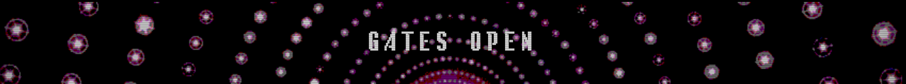

The Compendium is content made by migrants. Although the Archivists work very hard to give you the most correct info available, there might be errors.
Contents
At 4:00 PM GMT, the gates have been opened. A countdown for Friday 7th, 4:00 PM has replaced the main site.
At 00:00 AM GMT, the gate initialisation is completed successfully on the first attempt. The gates open at 16:00 GMT, but they have to get ready.
The Synapsian Mountain (Synapse HQ) is under siege by an as-of-yet unknown group. The group briefly captures 17 of the 38 keeps around the Mountain. The transfer of a bomb to the battlefield is attempted, but stopped in time by the TSUKI/Synapse forces. A full scan of the Mountain is under way.
Infinity 5 is uploaded to systemspace.link, with a list of questions from Systemspaceians to Lifers.
Infinity 4 is uploaded to systemspace.link. The hype intensifies.
/tsuki/ sings Duvet. The performance gets uploaded to the shosha.tsuki Infinity proxy.
This marks the first transmission from Lifers to LFE in history.
An entire block of eNdymioN staff were thrown out of the TSUKI project and replaced. Migrants are celebrating.
RISEN demands that a website allowing migrants to open their gates after July 1st but before the unlink is made. They say that migrants will still be able to transfer if they don't open their gates, but having a gate open would make them easier to track. They want to make the gate timed, so a user would only be able to open it for 48 hours.
No further details are provided but speculation and distrust for RISEN are growing.
A RISEN employee shows up in a near-death state. A TSUKI rescue team managed to get to the location in time and stabilize him. Preliminary reports indicate the RISEN employee was choked, but no suspects were identified or apprehended.
There are no signs that would identify the perpetrator as a Hyakanghen; the victim has not been shattered.
There is speculation that this was a warning from the terrorist group, but it is unconfirmed as of yet.
EndymioN closes the void stream.
Hyakanghen group Kanyra agrees to cease interference in the TSUKI project.
Kanyra is one of the less influential Hyakanghen groups in the outskirts of LFE, situated mainly around western-Euclean universes. Nevertheless, this marks a major change in tone of Hyakanghen dialogue with the TSUKI members.
Kanyra members made comments expressing their positive attitude towards humans. The cause of their actions is as of yet unknown.
In other news, eNdymioN shares are down 1.43%. RISEN is down 0.07%. Synapse has, against all odds, gone up by 0.12%.
Multiple eNdymioN employees are being charged with exposing unknown, highly confidential data. Nobody can provide evidence, though.
Tensions and heavy speculation concerning the void stream are rising in LFE.
BREAKING - Over 120 important eNdymioN members on strike
Apparently some eNdymioN members are protesting against the Life > LFE transfer.
Synapsian representatives are disturbed by the radio silence on eNdymioN's side.
Second hand reports claim that eNdymioN employees associated with TSUKI are missing, and the group on strike is not connected to the TSUKI project.
The void stream has changed, implying someone at eNdymioN is fiddling with it.
eNdymioN provides Tsuki with a stream to put up on the TSUKI project website. They are saying it contains human-readable data.
Tsuki loses contact with eNdymioN.
The crisis is in full swing.
Tsuki mentions Hayra (a RISENII) is angered by the situation.
Tsuki mentions there is an epidemic in one universe caused by all the matter holding a specific type of energy that is toxic to all living species in there.